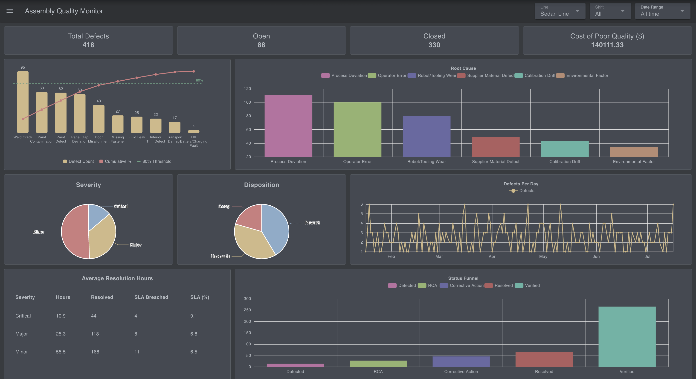
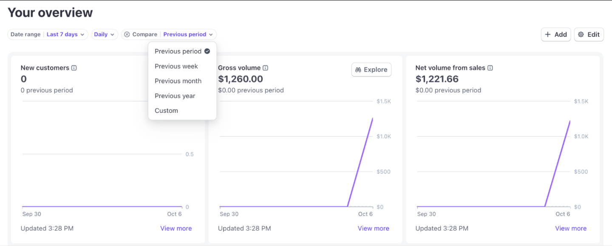
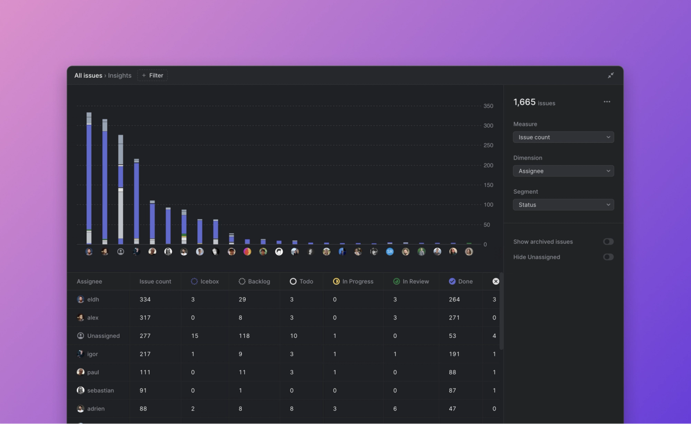
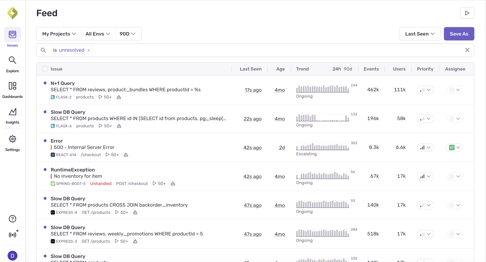

Mockup tĩnh, bấm thử được (bấm thanh, bấm cột ngày, đổi cách xem). Ba phương án dùng chung một bộ số và một thanh lọc, chỉ khác cách bày. Chưa đụng code.
Đã đọc gì trước khi vẽ
Giao diện: frontend/src/pages/kcs/KcsBaoCaoLoi.tsx (3 cách xem: theo công đoạn và theo tổ là bảng ngày tô đậm dần, theo tiêu chí là bảng lần xét/hỏng), thanh lọc ThanhLoc kỳ theo ngày kiểm.
Máy chủ: backend/app/services/san_xuat/kcs_bao_cao.py (_bang_nhiet, _tieu_chi_hong, _xep_hang_loi, _lich_su_rows), model san_xuat_kcs.py (lần ghi lỗi có mô tả, số, đơn vị, tổ chịu, công đoạn gây, ảnh, người ghi).
Doc design-kcs-quy-trach-nhiem.md mục 4: đã BỎ Pareto, tỷ lệ đạt lần đầu, quy đổi đơn vị. Mockup này giữ đúng: thanh xếp hạng đơn giản, không đường cộng dồn, không quy đổi.
DB dev svn_erp_trong (chỉ đọc): mới có 2 lần ghi lỗi và 2 lượt kiểm bước cuối, quá ít để thấy biểu đồ. Nên mockup mặc định dùng 30 ngày số GIẢ ĐỊNH dựng từ tên thật (công đoạn, tổ, tiêu chí, lệnh, khách trong DB). Lệnh LSX26-0008, LSX26-0009, công đoạn Bế hộp, Dán hộp và tên người ghi là giả định. Nút "Số thật DB dev" trên thanh đen cho xem màn khi chỉ có 2 lần ghi lỗi.
Logic màn mới (đã nói ở tin nhắn trước)
Hàng số: lượt kiểm, tỷ lệ đạt ở bước cuối, số lần ghi lỗi, số lệnh có lỗi, mỗi số có so với kỳ trước liền kề cùng độ dài.
Xu hướng: lỗi tăng hay giảm, ngày nào bất thường.
Lỗi tập trung ở đâu: công đoạn gây lỗi, tổ chịu, tiêu chí hay hỏng. Thanh đếm theo số lần ghi lỗi vì số lượng lỗi khác đơn vị (tờ in, tay sách, cái) không cộng được. Số lượng hiện kèm đơn vị bên cạnh.
Bấm một thanh hay một ngày là lọc cả màn theo chỗ đó.
Cuối cùng là từng lần ghi lỗi: lệnh, khách, công đoạn gây, bắt ở đâu, tiêu chí hay mô tả, số, tổ, ảnh, người ghi.
Tham khảo đã mở (ảnh chụp ở docs/mockups/tham-khao-kcs-bao-cao/)
Bấm ảnh để xem cỡ thật. Mỗi phương án bám một ảnh chính.

FlowFuse: bảng theo dõi lỗi dây chuyềnHọc: một trang gồm hàng số, xếp hạng loại lỗi và lỗi mỗi ngày, ba bộ lọc trên đầu. Bỏ: bánh tròn, mỗi cột một màu cầu vồng, đường ngày răng cưa khó đọc. Khuôn của A.

Stripe: so với kỳ trướcHọc: mỗi số có dòng "kỳ trước" ngay dưới, chọn kỳ so sánh cạnh ô kỳ. Dùng cho hàng số của cả 3 phương án.
iFactory: bảng kiểm cuốiHọc: thanh ngang "công đoạn hỏng nhiều nhất" có số ở đầu thanh, xu hướng tỷ lệ đạt tách riêng. Lưu ý: ảnh quảng cáo dựng sẵn, không phải màn sản phẩm chạy thật.

Linear Insights: một biểu đồ, đổi chiềuHọc: một biểu đồ to, cột phải chọn Đếm gì, Xếp theo gì, Tách màu theo gì; bảng ngay dưới cùng dòng với biểu đồ. Khuôn của B.

Sentry Issues: danh sách lỗi lặp lạiHọc: gom các lần gặp cùng một lỗi thành một dòng, có xu hướng nhỏ ngay trong dòng, nhãn "Ongoing / Escalating", bấm vào xem từng lần. Khuôn của C.
iFactory: bảng chất lượng kèm ParetoKhông lấy: Pareto có đường cộng dồn và SPC đã bị bỏ ngày 08/10; bánh tròn 5 màu khó so. Chỉ lấy ý mũi tên so kỳ trước.
Đã mở mà bỏ: Google Hình ảnh (Google chặn trình duyệt tự động bằng trang CAPTCHA, nên tìm qua công cụ tìm kiếm rồi mở thẳng trang sản phẩm); Tulip Quality Event Dashboard (trang thư viện và trang tài liệu không tải ảnh màn hình nào); Shoplogix Pareto (chỉ có ảnh bìa); Odoo Quality (chỉ có bài hướng dẫn bên thứ ba, ảnh cũ bản 14–17).
Phương án
Máy chủ cần thêm gì (cả 3 phương án giống nhau)
Danh sách từng lần ghi lỗi trong kỳ (đã có đủ cột trong DB; hiện báo cáo chỉ trả bảng cộng sẵn), phân trang ở máy chủ.
Số kỳ trước: gọi lại cùng hàm tổng hợp với kỳ dời lùi đúng độ dài, chỉ lấy 4 con số.
Đếm số lần ghi lỗi theo ngày, theo công đoạn gây, tổ chịu, tiêu chí (tiêu chí lấy từ dòng lỗi có gắn tiêu chí; "Lỗi khác" gom theo công đoạn).
Không bảng mới, không cột mới, không migration. Xuất Excel giữ như cũ, thêm sheet "Các lần ghi lỗi".